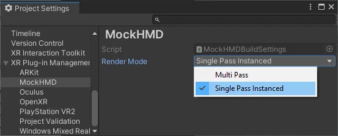

Single-pass instanced rendering and custom shaders
Introduction to stereo rendering
Virtual reality (VR) and most mixed reality (MR) devices require rendering the Unity scene in stereo. Unity XR supports two stereo render modes and one variant:
Multi-pass: in this mode, Unity performs a render pass for each eye. Unity shares some parts of the render loop between the two passes, so multi-pass rendering is faster than rendering the scene with two unique cameras. Multi-pass mode provides the widest compatibility with existing shaders and rendering utilities, but is slower than single-pass instanced mode.
Single-pass instanced: in this mode, Unity renders the scene in a single pass using instanced draw calls. This mode significantly decreases CPU usage and slightly decreases GPU usage compared to the multi-pass mode.
Multiview: A variation of single-pass instanced rendering that some devices support. This option replaces single-pass instanced when available.
Note: The earlier technique of rendering the scene into a double-wide texture using a single render pass is no longer available.
Single-pass instanced stereo rendering is available on most VR platforms.
If you use custom hand-coded shaders, you must modify them to support single-pass instanced rendering. Unmodified shaders render to only one eye (the first slice of the stereo texture array). Unity’s built-in shaders and Shader Graph shaders support single-pass instanced rendering automatically, unless you use Shader Graph in the built-in render pipeline. For more information, refer to Single-pass instanced rendering and custom shaders.
Set the render mode
You can find the Render Mode setting under XR Plug-in Management in Project Settings. Each XR provider plug-in provides its own setting, if supported.
To set a render mode:
Open Project Settings (menu: Edit > Project Settings).
Expand the XR Plug-in Management section, if necessary.
Select the settings page for the relevant provider plug-in.
Select a mode from the list.

Render mode options in the MockHMD provider plug-in
Note: Some plug-ins name the setting Stereo Rendering Mode.
Single-pass instanced render mode support
The following platforms and devices support single-pass instanced render mode:
Android devices that support the Multiview extension, including standalone headsets such as Meta Quest
PlayStation®VR and PlayStation®VR2
Windows devices (tethered)
On Windows, single-pass instanced rendering has the following graphics API requirements:
On desktop, the only tested and supported graphics APIs for XR are DirectX 11 and DirectX 12. For DirectX on desktop, the GPU must support Direct3D 11 and the VPAndRTArrayIndexFromAnyShaderFeedingRasterizer extension.
Unity doesn’t support OpenGL and Vulkan for XR on desktop. Unity doesn’t prevent you from using or enabling them, but they’re untested for XR and might not work as expected. For OpenGL on desktop, the GPU must support one of the following extensions:
GL_NV_viewport_array2
GL_AMD_vertex_shader_layer
GL_ARB_shader_viewport_layer_array
If you set the Render Mode to Single Pass Instanced when that mode isn’t supported, then rendering falls back to multi-pass mode.
Notes:
Unity doesn’t support single-pass instanced rendering in the built-in render pipeline when using Shader Graph.
Unity doesn’t support single-pass instanced rendering in the built-in render pipeline when using deferred rendering.